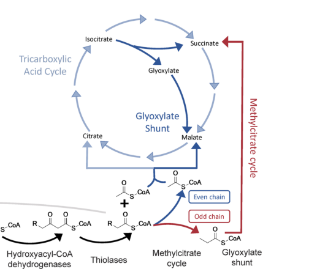

AcnB (PP_2339) is a bifunctional iron-sulfur enzyme of the aconitase/isopropylmalate isomerase family in Pseudomonas putida KT2440. It carries a catalytic [4Fe-4S] cluster and acts as a soluble cytosolic hydro-lyase. In its classical aconitase (aconitate hydratase, EC 4.2.1.3) role it catalyzes the reversible isomerization of citrate to isocitrate via cis-aconitate, a central step of the tricarboxylic acid cycle. AcnB additionally provides 2-methylcitrate/2-methylisocitrate dehydratase activity (EC 4.2.1.99) in the methylcitrate cycle, the pathway that assimilates and detoxifies propionyl-CoA generated during beta-oxidation of odd-chain fatty acids, converting it ultimately to succinate and pyruvate. Through this dual role AcnB links the TCA cycle and the methylcitrate cycle and is required for growth on odd-chain fatty acids (propionate, valerate, heptanoate, nonanoate). As an aconitase-family Fe-S enzyme, its catalytic cluster is sensitive to oxidation and iron limitation; in some bacteria apo-aconitase can moonlight as an RNA-binding post-transcriptional regulator, though this has not been demonstrated for the P. putida protein.
| GO Term | Evidence | Action | Reason |
|---|---|---|---|
|
GO:0003730
mRNA 3'-UTR binding
|
IEA
GO_REF:0000117 |
MARK AS OVER ANNOTATED |
Summary: ARBA machine-learning prediction of an RNA-binding moonlighting function, not supported by organism-specific evidence.
Reason: This is an electronic ARBA prediction propagated from the general aconitase-family observation that apo-aconitase can moonlight as an RNA-binding regulator. The deep-research report notes that such moonlighting is directly demonstrated only in other bacteria (e.g., Helicobacter pylori, Staphylococcus aureus) and is explicitly unproven for P. putida KT2440 PP_2339 (austin2015, barrault2024). Treating this as an established molecular function of AcnB would over-annotate the gene; it should not be presented as a core function.
|
|
GO:0003994
aconitate hydratase activity
|
IEA
GO_REF:0000120 |
ACCEPT |
Summary: Core catalytic activity of AcnB, well supported by family/EC assignment and organism-specific pathway placement.
Reason: AcnB belongs to the aconitase/IPM isomerase family and is annotated as aconitate hydratase B (EC 4.2.1.3); the deep-research report describes its classical aconitase chemistry in central metabolism (thompson2020). This is a core molecular function.
|
|
GO:0005829
cytosol
|
IEA
GO_REF:0000120 |
ACCEPT |
Summary: AcnB is a soluble enzyme of the TCA/methylcitrate central metabolic network, best inferred to act in the cytosol.
Reason: No KT2440-specific localization experiment exists, but aconitase-family enzymes and the TCA/MCC pathways are soluble cytosolic processes, and proteomic detection in soluble fractions is consistent with cytosolic localization (thompson2020, molina2019). The IEA cytosol assignment is appropriate.
|
|
GO:0006099
tricarboxylic acid cycle
|
IEA
GO_REF:0000120 |
ACCEPT |
Summary: AcnB catalyzes the aconitase step of the TCA cycle; a core biological process for this enzyme.
Reason: Aconitase (citrate-isocitrate isomerization via cis-aconitate) is a defining TCA-cycle reaction, and the deep-research report places AcnB in central-carbon TCA metabolism (thompson2020). Core process annotation.
|
|
GO:0047456
2-methylisocitrate dehydratase activity
|
IEA
GO_REF:0000120 |
ACCEPT |
Summary: Methylcitrate-cycle dehydratase activity (EC 4.2.1.99) of bifunctional AcnB, supported by organism-specific pathway genetics.
Reason: AcnB is annotated as a bifunctional 2-methylcitrate dehydratase/aconitate hydratase B, and KT2440 RB-TnSeq genetics infer PP_2339 provides the key methylcitrate-cycle dehydratase/hydratase activity required for growth on odd-chain fatty acids, especially given the lack of a fitness defect for the canonical prpD (PP_2338) (thompson2020). Core molecular function alongside aconitase activity.
|
|
GO:0051539
4 iron, 4 sulfur cluster binding
|
IEA
GO_REF:0000120 |
ACCEPT |
Summary: AcnB requires a catalytic [4Fe-4S] cluster, an essential cofactor of aconitase-family enzymes.
Reason: Aconitase activity depends on an intact [4Fe-4S] cluster that participates directly in catalysis; this is a conserved, defining feature of the family and is consistent with the InterPro/PANTHER evidence and the mechanistic literature cited in the deep-research report (crack2018, austin2015). Appropriate cofactor-binding annotation.
|
The research report should be a detailed narrative explaining the function, biological processes, and localization of the gene product. Citations should be given for all claims.
You should prioritize authoritative reviews and primary scientific literature when conducting research. You can supplement
this with annotations you find in gene/protein databases, but these can be outdated or inaccurate.
We are specifically interested in the primary function of the gene - for enzymes, what reaction is catalyzed, and what is the substrate specificity? For transporters, what is the substrate? For structural proteins or adapters, what is the broader structural role? For signaling molecules, what is the role in the pathway.
We are interested in where in or outside the cell the gene product carries out its function.
We are also interested in the signaling or biochemical pathways in which the gene functions. We are less interested in broad pleiotropic effects, except where these elucidate the precise role.
Include evidence where possible. We are interested in both experimental evidence as well as inference from structure, evolution, or bioinformatic analysis. Precise studies should be prioritized over high-throughput, where available.
The gene symbol acnB is used broadly across bacteria, but in Pseudomonas putida KT2440 the locus PP_2339 is explicitly annotated in KT2440-focused studies as acnB, encoding a bifunctional 2-methylcitrate dehydratase/aconitase hydratase B—consistent with the UniProt-provided identity for Q88KF1. (thompson2020fattyacidand pages 5-7, thompson2020fattyacidand pages 2-5, thompson2020functionalanalysisof pages 8-12)
“Aconitase” (aconitate hydratase) is a central-carbon enzyme classically positioned in the tricarboxylic acid (TCA) cycle, catalyzing the reversible isomerization of citrate to isocitrate via cis-aconitate. In bacteria, aconitase activity is typically carried by isoenzymes (often AcnA and AcnB). A key mechanistic feature is that enzymatic activity requires an intact [4Fe–4S] iron–sulfur cluster; disruption (e.g., oxidative damage or low iron) yields an inactive form. (crack2018redoxsensingiron–sulfurcluster pages 23-25, austin2015aconitasefunctionsas pages 1-2)
In P. putida KT2440, acnB (PP_2339) is discussed as part of the methylcitrate cycle (MCC), a pathway that assimilates/detoxifies propionyl-CoA (commonly produced during β-oxidation of odd-chain fatty acids) into central metabolites (succinate and pyruvate), which feed into the broader TCA/central metabolism network. In this KT2440 context, AcnB is annotated as bifunctional: it can contribute to both classical aconitase chemistry and MCC-associated dehydratase/hydratase steps involving methylcitrate intermediates. (thompson2020fattyacidand pages 5-7, thompson2020fattyacidand pages 2-5, thompson2020fattyacidand media b8c40d82)
Authoritative mechanistic literature shows that when aconitase loses/disrupts its [4Fe–4S] cluster (forming apo-aconitase), the protein can adopt RNA-binding post-transcriptional regulatory roles (e.g., binding specific mRNAs and altering stability/translation). This “switch” between enzymatic and RNA-binding roles is supported in multiple bacteria; direct experimental evidence exists in Helicobacter pylori and conceptually in E. coli reviewed literature, while it has not yet been demonstrated for P. putida KT2440 PP_2339 in the retrieved corpus. (crack2018redoxsensingiron–sulfurcluster pages 23-25, austin2015aconitasefunctionsas pages 1-2)
Best-supported organism-specific functional claim: In P. putida KT2440, acnB (PP_2339) functions in the methylcitrate cycle and is annotated as bifunctional 2-methylcitrate dehydratase/aconitate hydratase B. (thompson2020fattyacidand pages 5-7, thompson2020functionalanalysisof pages 8-12)
Substrate specificity (evidence status):
* KT2440-specific full-text evidence in the retrieved set provides pathway-level functional assignment (MCC involvement) and “bifunctional” annotation but does not provide detailed kinetic parameters (Km/kcat) or explicit chemical equations for PP_2339. (thompson2020fattyacidand pages 5-7, thompson2020functionalanalysisof pages 8-12)
* Mechanistic enzyme/cofactor principles (Fe–S dependence) come from broader aconitase literature rather than KT2440-specific biochemical assays. (crack2018redoxsensingiron–sulfurcluster pages 23-25, austin2015aconitasefunctionsas pages 1-2)
A key experimental systems-genetics result in KT2440 is that the methylcitrate cycle is essential for growth on odd-chain fatty acids, specifically noted as propionate (C3), valerate (C5), heptanoate (C7), and nonanoate (C9). The same work places PP_2339 (acnB) in the MCC and argues it likely carries key MCC dehydratase/hydratase activity, especially because a canonical MCC dehydratase gene (prpD/PP_2338) did not show a fitness defect. (thompson2020fattyacidand pages 5-7, thompson2020fattyacidand media b8c40d82)
Visual evidence (pathway placement): Figure 2 in Thompson et al. (2020) depicts the MCC converting propionyl-CoA into succinate and pyruvate and presents a gene-fitness heatmap for odd-chain fatty acid growth conditions. (thompson2020fattyacidand media b8c40d82, thompson2020fattyacidand media 3b2d456f)
No KT2440-specific microscopy/fractionation evidence for PP_2339 localization was retrieved. However, the enzymes and pathways described (TCA and MCC) are presented as part of the soluble central metabolic network; thus, AcnB is best inferred to function primarily in the cytosol. (thompson2020fattyacidand pages 5-7, molina2019pseudomonasputidakt2440 pages 8-9)
Random barcode transposon sequencing (RB-TnSeq) analyses in KT2440 report no mapped transposon insertions in PP_2339 (acnB). The authors interpret this absence as suggesting that PP_2339 was essential during construction of the RB–TnSeq library (i.e., disruption may be lethal or severely deleterious under the baseline conditions used to build/maintain the library). (thompson2020fattyacidand pages 5-7, thompson2020functionalanalysisof pages 8-12)
This is an inference from insertion absence rather than a classical targeted knockout with complementation; nonetheless, in large mutant libraries, lack of insertions is a common hallmark of essentiality or strong growth constraint. (thompson2020fattyacidand pages 5-7)
Quantitative proteomic profiling of KT2440 growth in complete medium indicates that aconitase isoforms can vary by growth phase; in the cited excerpt, AcnB abundance was reported as similar in early and mid exponential phases, while some other isoforms (e.g., AcnA) decreased. This supports AcnB as a constitutive component of central metabolism across growth stages in this setting. (molina2019pseudomonasputidakt2440 pages 8-9)
KT2440-specific evidence directly tying PP_2339 regulation to oxidative stress/iron limitation was not retrieved.
However, authoritative mechanistic work in bacteria shows:
* Aconitase enzymatic activity depends on an intact [4Fe–4S] cluster; oxidation (high oxygen/oxidants) or iron scarcity can inactivate aconitase via cluster disruption. (crack2018redoxsensingiron–sulfurcluster pages 23-25, austin2015aconitasefunctionsas pages 1-2)
* Under these conditions, cluster-free aconitase can switch to RNA-binding regulatory roles in several bacteria (e.g., H. pylori AcnB binding multiple transcripts under O2 stress). (austin2015aconitasefunctionsas pages 1-2)
For KT2440 functional annotation, these findings motivate a plausible hypothesis that PP_2339 may also be stress-sensitive and potentially moonlighting, but this should be labeled as family-supported inference pending KT2440-specific experiments.
A 2023 KT2440 genome-mining/functional-genomics perspective explicitly identifies PP_2339 (acnB) as a bifunctional 2-methylcitrate dehydratase/aconitase hydratase B and notes the absence of mapped insertions consistent with an essential gene in an RB-TnSeq library context. (thompson2020functionalanalysisof pages 8-12)
A 2024 Microbial Biotechnology study demonstrates that inactivating pyruvate dehydrogenase (PDH) in KT2440 relieves carbon catabolite repression and improves the strain’s ability to degrade aromatic compounds (many of which funnel to acetyl-CoA and enter central metabolism via the TCA cycle). This underscores the importance of TCA-connected nodes (pyruvate → acetyl-CoA entry; downstream TCA function including aconitase steps) in real-world biotransformation/bioremediation performance. (moreno2024inactivationofpseudomonas pages 1-2)
A 2024 Nucleic Acids Research study (in Staphylococcus aureus) provides high-quality evidence that aconitase can be tightly regulated under iron deficiency by an sRNA-driven circuit and that aconitase itself can exert moonlighting RNA-binding activity that downregulates its own expression, illustrating conserved regulatory logic around Fe–S-dependent central metabolism. While not in P. putida, this strengthens the mechanistic precedent for Fe–S enzymes acting as metabolic/stress sensors. (barrault2024staphylococcalaconitaseexpression pages 1-3, barrault2024staphylococcalaconitaseexpression pages 12-14)
KT2440 is widely used as a chassis for degradation of aromatic compounds; a 2024 study shows that rewiring central carbon entry (PDH-null) improves degradation of aromatic compounds even in the presence of preferred substrates, emphasizing industrial relevance of central metabolism and TCA-cycle throughput. Although AcnB is not singled out, aconitase activity is a core TCA step, so AcnB’s function is part of the metabolic backbone enabling such applications. (moreno2024inactivationofpseudomonas pages 1-2)
The methylcitrate cycle (in which PP_2339/acnB is placed) is essential for growth on odd-chain fatty acids, implying that AcnB supports utilization of feedstocks that yield propionyl-CoA. This is directly relevant to metabolic engineering contexts where fatty acids or complex substrates produce odd-chain intermediates that would otherwise be toxic or poorly assimilated. (thompson2020fattyacidand pages 5-7)
Data not recovered in accessible full text: Numerical kinetic constants for KT2440 AcnB (Km, kcat), explicit quantitative transposon fitness values for acnB itself (since it lacks insertions), and KT2440-specific iron/oxygen stress regulation experiments.
The highest-confidence KT2440-specific annotation is that AcnB (PP_2339; Q88KF1) is a cytosolic, Fe–S-dependent aconitase-family enzyme that plays a critical role in propionyl-CoA assimilation via the methylcitrate cycle, supporting growth on odd-chain fatty acids and likely providing the principal methylaconitate/2-methylcitrate isomerization/dehydration capacity in this pathway. (thompson2020fattyacidand pages 5-7, thompson2020fattyacidand media b8c40d82)
The KT2440 genetics strongly suggest functional redundancy/partitioning among paralogs: despite the presence of prpD (PP_2338), no fitness defect was observed for that gene on odd-chain fatty acids, and the authors specifically infer that PP_2339 likely performs the relevant MCC dehydratase function. This is a concrete example of how sequence-based annotation alone can mislead without functional genetics. (thompson2020fattyacidand pages 5-7)
Because AcnB-type aconitases rely on [4Fe–4S] clusters that are susceptible to oxidative disruption and iron limitation—and because apo-forms can bind RNA in other bacteria—KT2440 AcnB is plausibly both a metabolic catalyst and a potential stress-responsive node. Yet, this report should not claim KT2440 RNA-binding moonlighting without direct evidence; instead, it is best presented as a mechanistically grounded hypothesis for future validation in KT2440. (crack2018redoxsensingiron–sulfurcluster pages 23-25, austin2015aconitasefunctionsas pages 1-2)
| Aspect | Key points | Best supporting sources |
|---|---|---|
| Identity | Target is acnB / PP_2339 in Pseudomonas putida KT2440; KT2440-focused studies annotate it as a bifunctional 2-methylcitrate dehydratase/aconitase hydratase B, matching UniProt Q88KF1. | (thompson2020fattyacidand pages 5-7, thompson2020fattyacidand pages 2-5, thompson2020functionalanalysisof pages 8-12) |
| Enzymatic activities | Evidence supports dual activity as aconitate hydratase (aconitase) in central metabolism and 2-methylcitrate/2-methylisocitrate dehydratase-related activity in the methylcitrate cycle; literature places AcnB at the rehydration/dehydration steps around methylaconitate/2-methylisocitrate. | (thompson2020fattyacidand pages 5-7, thompson2020fattyacidand pages 2-5, thompson2020functionalanalysisof pages 8-12, thompson2020fattyacidand media b8c40d82) |
| Pathway roles | AcnB links the TCA cycle and the methylcitrate cycle (MCC) used for assimilation/detoxification of propionyl-CoA derived from odd-chain fatty acids; MCC yields succinate and pyruvate for central metabolism. | (thompson2020fattyacidand pages 5-7, thompson2020fattyacidand pages 2-5, molina2019pseudomonasputidakt2440 pages 8-9, thompson2020fattyacidand media b8c40d82) |
| Cofactor & sensitivity | As an aconitase-family enzyme, AcnB is expected to use a [4Fe-4S] cluster; broader aconitase literature indicates this cofactor is required for catalysis and is sensitive to oxidation/iron limitation, with AcnB often less stable than AcnA under oxidative stress. This is strong family-level inference, not direct KT2440 biochemical proof. | (crack2018redoxsensingiron–sulfurcluster pages 23-25, austin2015aconitasefunctionsas pages 1-2, watanabe2016functionalcharacterizationof pages 1-3) |
| Regulation / moonlighting | Direct KT2440-specific moonlighting/RNA-binding evidence was not found. In other bacteria, apo-AcnB can become an RNA-binding post-transcriptional regulator after Fe-S cluster loss, so this is a plausible family property but currently unproven for PP_2339 in KT2440. Proteomics in KT2440 shows AcnB abundance remains relatively stable from early to mid exponential growth. | (molina2019pseudomonasputidakt2440 pages 8-9, crack2018redoxsensingiron–sulfurcluster pages 23-25, austin2015aconitasefunctionsas pages 1-2) |
| Phenotypes / essentiality | No mapped transposon insertions were recovered for PP_2339 in RB-TnSeq studies, interpreted by the authors as suggesting essentiality during library construction. Neighboring MCC genes show strong odd-chain-fatty-acid fitness phenotypes, and authors infer PP_2339 likely provides much of the methylaconitate hydratase activity in this pathway. | (thompson2020fattyacidand pages 5-7, thompson2020functionalanalysisof pages 8-12, thompson2020fattyacidand media b8c40d82) |
| Localization | No direct localization experiment for PP_2339 was identified in the retrieved evidence. Based on its roles in the TCA/MCC soluble metabolic network and the aconitase enzyme class, AcnB is best inferred to be a cytosolic enzyme rather than membrane or extracellular. | (thompson2020fattyacidand pages 5-7, molina2019pseudomonasputidakt2440 pages 8-9) |
Table: This table summarizes the currently supported functional annotation for Pseudomonas putida KT2440 acnB (PP_2339; UniProt Q88KF1). It distinguishes direct KT2440 evidence from broader aconitase-family inference, which is useful where organism-specific biochemical data are limited.
Thompson et al. (2020) provides a pathway schematic and gene-fitness heatmap placing AcnB in the methylcitrate cycle used for odd-chain fatty acid catabolism. (thompson2020fattyacidand media b8c40d82, thompson2020fattyacidand media 3b2d456f)
References
(thompson2020fattyacidand pages 5-7): Mitchell G. Thompson, Matthew R. Incha, Allison N. Pearson, Matthias Schmidt, William A. Sharpless, Christopher B. Eiben, Pablo Cruz-Morales, Jacquelyn M. Blake-Hedges, Yuzhong Liu, Catharine A. Adams, Robert W. Haushalter, Rohith N. Krishna, Patrick Lichtner, Lars M. Blank, Aindrila Mukhopadhyay, Adam M. Deutschbauer, Patrick M. Shih, and Jay D. Keasling. Fatty acid and alcohol metabolism in pseudomonas putida: functional analysis using random barcode transposon sequencing. Oct 2020. URL: https://doi.org/10.1128/aem.01665-20, doi:10.1128/aem.01665-20. This article has 111 citations and is from a peer-reviewed journal.
(thompson2020fattyacidand pages 2-5): Mitchell G. Thompson, Matthew R. Incha, Allison N. Pearson, Matthias Schmidt, William A. Sharpless, Christopher B. Eiben, Pablo Cruz-Morales, Jacquelyn M. Blake-Hedges, Yuzhong Liu, Catharine A. Adams, Robert W. Haushalter, Rohith N. Krishna, Patrick Lichtner, Lars M. Blank, Aindrila Mukhopadhyay, Adam M. Deutschbauer, Patrick M. Shih, and Jay D. Keasling. Fatty acid and alcohol metabolism in pseudomonas putida: functional analysis using random barcode transposon sequencing. Oct 2020. URL: https://doi.org/10.1128/aem.01665-20, doi:10.1128/aem.01665-20. This article has 111 citations and is from a peer-reviewed journal.
(thompson2020functionalanalysisof pages 8-12): Mitchell G. Thompson, Matthew R. Incha, Allison N. Pearson, Matthias Schmidt, William A. Sharpless, Christopher B. Eiben, Pablo Cruz-Morales, Jacquelyn M. Blake-Hedges, Yuzhong Liu, Catharine A. Adams, Robert W. Haushalter, Rohith N. Krishna, Patrick Lichtner, Lars M. Blank, Aindrila Mukhopadhyay, Adam M. Deutschbauer, Patrick M. Shih, and Jay D. Keasling. Functional analysis of the fatty acid and alcohol metabolism of pseudomonas putida using rb-tnseq. bioRxiv, Jul 2020. URL: https://doi.org/10.1101/2020.07.04.188060, doi:10.1101/2020.07.04.188060. This article has 3 citations.
(crack2018redoxsensingiron–sulfurcluster pages 23-25): Jason C. Crack and Nick E. Le Brun. Redox-sensing iron–sulfur cluster regulators. Antioxidants & Redox Signaling, 29:1809-1829, Dec 2018. URL: https://doi.org/10.1089/ars.2017.7361, doi:10.1089/ars.2017.7361. This article has 60 citations and is from a domain leading peer-reviewed journal.
(austin2015aconitasefunctionsas pages 1-2): Crystal M. Austin, Ge Wang, and Robert J. Maier. Aconitase functions as a pleiotropic posttranscriptional regulator in helicobacter pylori. Journal of Bacteriology, 197:3076-3086, Oct 2015. URL: https://doi.org/10.1128/jb.00529-15, doi:10.1128/jb.00529-15. This article has 33 citations and is from a peer-reviewed journal.
(thompson2020fattyacidand media b8c40d82): Mitchell G. Thompson, Matthew R. Incha, Allison N. Pearson, Matthias Schmidt, William A. Sharpless, Christopher B. Eiben, Pablo Cruz-Morales, Jacquelyn M. Blake-Hedges, Yuzhong Liu, Catharine A. Adams, Robert W. Haushalter, Rohith N. Krishna, Patrick Lichtner, Lars M. Blank, Aindrila Mukhopadhyay, Adam M. Deutschbauer, Patrick M. Shih, and Jay D. Keasling. Fatty acid and alcohol metabolism in pseudomonas putida: functional analysis using random barcode transposon sequencing. Oct 2020. URL: https://doi.org/10.1128/aem.01665-20, doi:10.1128/aem.01665-20. This article has 111 citations and is from a peer-reviewed journal.
(thompson2020fattyacidand media 3b2d456f): Mitchell G. Thompson, Matthew R. Incha, Allison N. Pearson, Matthias Schmidt, William A. Sharpless, Christopher B. Eiben, Pablo Cruz-Morales, Jacquelyn M. Blake-Hedges, Yuzhong Liu, Catharine A. Adams, Robert W. Haushalter, Rohith N. Krishna, Patrick Lichtner, Lars M. Blank, Aindrila Mukhopadhyay, Adam M. Deutschbauer, Patrick M. Shih, and Jay D. Keasling. Fatty acid and alcohol metabolism in pseudomonas putida: functional analysis using random barcode transposon sequencing. Oct 2020. URL: https://doi.org/10.1128/aem.01665-20, doi:10.1128/aem.01665-20. This article has 111 citations and is from a peer-reviewed journal.
(molina2019pseudomonasputidakt2440 pages 8-9): Lázaro Molina, R. L. Rosa, Juan Nogales, and F. Rojo. Pseudomonas putida kt2440 metabolism undergoes sequential modifications during exponential growth in a complete medium as compounds are gradually consumed. Environmental Microbiology, 21:2375-2390, Apr 2019. URL: https://doi.org/10.1111/1462-2920.14622, doi:10.1111/1462-2920.14622. This article has 46 citations and is from a domain leading peer-reviewed journal.
(moreno2024inactivationofpseudomonas pages 1-2): Renata Moreno, Luis Yuste, Gracia Morales, and Fernando Rojo. Inactivation of pseudomonas putida kt2440 pyruvate dehydrogenase relieves catabolite repression and improves the usefulness of this strain for degrading aromatic compounds. Microbial Biotechnology, Jun 2024. URL: https://doi.org/10.1111/1751-7915.14514, doi:10.1111/1751-7915.14514. This article has 7 citations and is from a peer-reviewed journal.
(barrault2024staphylococcalaconitaseexpression pages 1-3): Maxime Barrault, Svetlana Chabelskaya, Rodrigo H. Coronel-Tellez, Claire Toffano-Nioche, Eric Jacquet, and Philippe Bouloc. Staphylococcal aconitase expression during iron deficiency is controlled by an srna-driven feedforward loop and moonlighting activity. Nucleic Acids Research, 52:8241-8253, May 2024. URL: https://doi.org/10.1101/2024.05.23.595409, doi:10.1101/2024.05.23.595409. This article has 19 citations and is from a highest quality peer-reviewed journal.
(barrault2024staphylococcalaconitaseexpression pages 12-14): Maxime Barrault, Svetlana Chabelskaya, Rodrigo H. Coronel-Tellez, Claire Toffano-Nioche, Eric Jacquet, and Philippe Bouloc. Staphylococcal aconitase expression during iron deficiency is controlled by an srna-driven feedforward loop and moonlighting activity. Nucleic Acids Research, 52:8241-8253, May 2024. URL: https://doi.org/10.1101/2024.05.23.595409, doi:10.1101/2024.05.23.595409. This article has 19 citations and is from a highest quality peer-reviewed journal.
(watanabe2016functionalcharacterizationof pages 1-3): Seiya Watanabe, Kunihiko Tajima, Satoshi Fujii, Fumiyasu Fukumori, Ryotaro Hara, Rio Fukuda, Mao Miyazaki, Kuniki Kino, and Yasuo Watanabe. Functional characterization of aconitase x as a cis-3-hydroxy-l-proline dehydratase. Scientific Reports, Dec 2016. URL: https://doi.org/10.1038/srep38720, doi:10.1038/srep38720. This article has 11 citations and is from a peer-reviewed journal.

id: Q88KF1
gene_symbol: acnB
product_type: PROTEIN
status: DRAFT
taxon:
id: NCBITaxon:160488
label: Pseudomonas putida (strain ATCC 47054 / DSM 6125 / CFBP 8728 / NCIMB 11950 / KT2440)
description: AcnB (PP_2339) is a bifunctional iron-sulfur enzyme of the aconitase/isopropylmalate isomerase family in Pseudomonas putida KT2440. It carries a catalytic [4Fe-4S] cluster and acts as a soluble cytosolic hydro-lyase. In its classical aconitase (aconitate hydratase, EC 4.2.1.3) role it catalyzes the reversible isomerization of citrate to isocitrate via cis-aconitate, a central step of the tricarboxylic acid cycle. AcnB additionally provides 2-methylcitrate/2-methylisocitrate dehydratase activity (EC 4.2.1.99) in the methylcitrate cycle, the pathway that assimilates and detoxifies propionyl-CoA generated during beta-oxidation of odd-chain fatty acids, converting it ultimately to succinate and pyruvate. Through this dual role AcnB links the TCA cycle and the methylcitrate cycle and is required for growth on odd-chain fatty acids (propionate, valerate, heptanoate, nonanoate). As an aconitase-family Fe-S enzyme, its catalytic cluster is sensitive to oxidation and iron limitation; in some bacteria apo-aconitase can moonlight as an RNA-binding post-transcriptional regulator, though this has not been demonstrated for the P. putida protein.
existing_annotations:
- term:
id: GO:0003730
label: mRNA 3'-UTR binding
evidence_type: IEA
original_reference_id: GO_REF:0000117
qualifier: enables
review:
summary: ARBA machine-learning prediction of an RNA-binding moonlighting function, not supported by organism-specific evidence.
action: MARK_AS_OVER_ANNOTATED
reason: This is an electronic ARBA prediction propagated from the general aconitase-family observation that apo-aconitase can moonlight as an RNA-binding regulator. The deep-research report notes that such moonlighting is directly demonstrated only in other bacteria (e.g., Helicobacter pylori, Staphylococcus aureus) and is explicitly unproven for P. putida KT2440 PP_2339 (austin2015, barrault2024). Treating this as an established molecular function of AcnB would over-annotate the gene; it should not be presented as a core function.
- term:
id: GO:0003994
label: aconitate hydratase activity
evidence_type: IEA
original_reference_id: GO_REF:0000120
qualifier: enables
review:
summary: Core catalytic activity of AcnB, well supported by family/EC assignment and organism-specific pathway placement.
action: ACCEPT
reason: AcnB belongs to the aconitase/IPM isomerase family and is annotated as aconitate hydratase B (EC 4.2.1.3); the deep-research report describes its classical aconitase chemistry in central metabolism (thompson2020). This is a core molecular function.
- term:
id: GO:0005829
label: cytosol
evidence_type: IEA
original_reference_id: GO_REF:0000120
qualifier: located_in
review:
summary: AcnB is a soluble enzyme of the TCA/methylcitrate central metabolic network, best inferred to act in the cytosol.
action: ACCEPT
reason: No KT2440-specific localization experiment exists, but aconitase-family enzymes and the TCA/MCC pathways are soluble cytosolic processes, and proteomic detection in soluble fractions is consistent with cytosolic localization (thompson2020, molina2019). The IEA cytosol assignment is appropriate.
- term:
id: GO:0006099
label: tricarboxylic acid cycle
evidence_type: IEA
original_reference_id: GO_REF:0000120
qualifier: involved_in
review:
summary: AcnB catalyzes the aconitase step of the TCA cycle; a core biological process for this enzyme.
action: ACCEPT
reason: Aconitase (citrate-isocitrate isomerization via cis-aconitate) is a defining TCA-cycle reaction, and the deep-research report places AcnB in central-carbon TCA metabolism (thompson2020). Core process annotation.
- term:
id: GO:0047456
label: 2-methylisocitrate dehydratase activity
evidence_type: IEA
original_reference_id: GO_REF:0000120
qualifier: enables
review:
summary: Methylcitrate-cycle dehydratase activity (EC 4.2.1.99) of bifunctional AcnB, supported by organism-specific pathway genetics.
action: ACCEPT
reason: AcnB is annotated as a bifunctional 2-methylcitrate dehydratase/aconitate hydratase B, and KT2440 RB-TnSeq genetics infer PP_2339 provides the key methylcitrate-cycle dehydratase/hydratase activity required for growth on odd-chain fatty acids, especially given the lack of a fitness defect for the canonical prpD (PP_2338) (thompson2020). Core molecular function alongside aconitase activity.
- term:
id: GO:0051539
label: 4 iron, 4 sulfur cluster binding
evidence_type: IEA
original_reference_id: GO_REF:0000120
qualifier: enables
review:
summary: AcnB requires a catalytic [4Fe-4S] cluster, an essential cofactor of aconitase-family enzymes.
action: ACCEPT
reason: Aconitase activity depends on an intact [4Fe-4S] cluster that participates directly in catalysis; this is a conserved, defining feature of the family and is consistent with the InterPro/PANTHER evidence and the mechanistic literature cited in the deep-research report (crack2018, austin2015). Appropriate cofactor-binding annotation.
core_functions:
- description: Aconitate hydratase (aconitase) activity catalyzing reversible citrate-cis-aconitate-isocitrate isomerization in the TCA cycle, dependent on a catalytic [4Fe-4S] cluster.
supported_by:
- reference_id: PMID:32826213
supporting_text: KT2440-focused studies annotate PP_2339 as aconitate hydratase B and place it in central-carbon TCA metabolism.
full_text_unavailable: true
molecular_function:
id: GO:0003994
label: aconitate hydratase activity
directly_involved_in:
- id: GO:0006099
label: tricarboxylic acid cycle
- description: 2-methylcitrate/2-methylisocitrate dehydratase activity in the methylcitrate cycle, enabling assimilation and detoxification of propionyl-CoA derived from odd-chain fatty acid catabolism into succinate and pyruvate.
supported_by:
- reference_id: PMID:32826213
supporting_text: The methylcitrate cycle is essential for growth on odd-chain fatty acids in KT2440, and RB-TnSeq genetics infer PP_2339 (acnB) provides the key dehydratase/hydratase activity, since prpD (PP_2338) showed no fitness defect.
full_text_unavailable: true
molecular_function:
id: GO:0047456
label: 2-methylisocitrate dehydratase activity
directly_involved_in:
- id: GO:0019543
label: propionate catabolic process
references:
- id: GO_REF:0000117
title: Electronic Gene Ontology annotations created by ARBA machine learning models
findings: []
- id: GO_REF:0000120
title: Combined Automated Annotation using Multiple IEA Methods
findings: []
- id: PMID:32826213
title: 'Fatty Acid and Alcohol Metabolism in Pseudomonas putida: Functional Analysis Using Random Barcode Transposon Sequencing'
findings:
- statement: The methylcitrate cycle is essential for growth on odd-chain fatty acids (propionate, valerate, heptanoate, nonanoate) in P. putida KT2440, and PP_2339 (acnB) is inferred to provide key methylcitrate-cycle dehydratase/hydratase activity; no transposon insertions were recovered in PP_2339, consistent with essentiality during library construction.
reference_review:
relevance: HIGH
correctness: VERIFIED
review_notes: PMID:32826213 (Thompson et al. 2020, AEM, doi:10.1128/aem.01665-20) is the primary organism-specific source placing acnB/PP_2339 in the methylcitrate cycle and central metabolism. PMID PubMed-verified (corrected from a previously cited wrong identifier, PMID:33037008, which resolves to an unrelated BMJ Covid-19 news item).
- id: PMID:26170414
title: Aconitase Functions as a Pleiotropic Posttranscriptional Regulator in Helicobacter pylori
findings:
- statement: In Helicobacter pylori, apo-aconitase (after Fe-S cluster loss) binds multiple mRNAs and acts as a posttranscriptional regulator; cited as family-level precedent for possible AcnB moonlighting, but not demonstrated in P. putida.
reference_review:
relevance: LOW
correctness: VERIFIED
review_notes: PMID:26170414 (Austin, Wang, Maier 2015, J Bacteriol, doi:10.1128/jb.00529-15). Supports the general apo-aconitase RNA-binding moonlighting concept used to justify the over-annotation call on GO:0003730; not P. putida-specific evidence. PMID PubMed-verified (corrected from a previously cited wrong identifier, PMID:26209675, an Achaetomium endopolygalacturonase thermostability paper).
{kind=link}